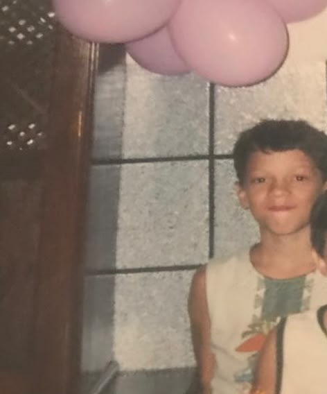
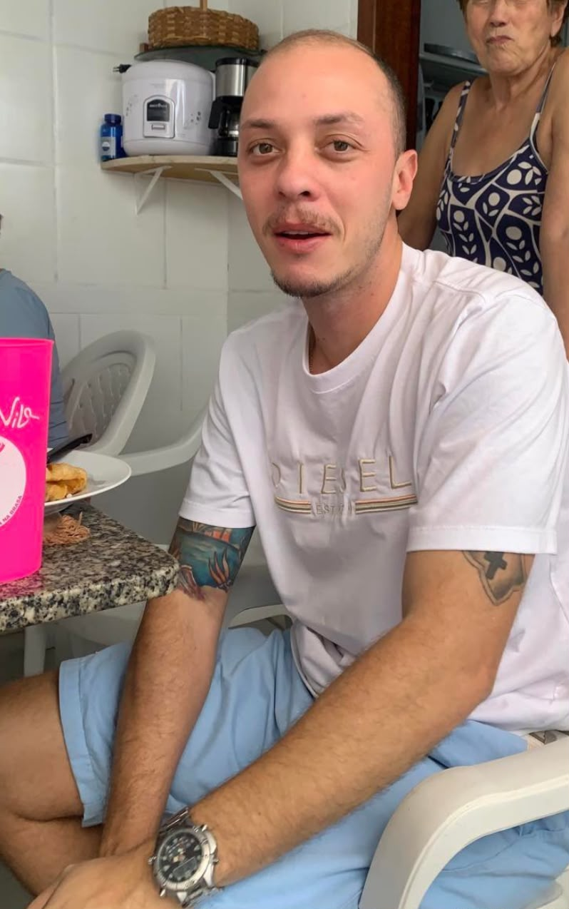

Um recado pra quem ainda tá negociando com o espelho
Não é sobre desistir. É sobre parar de gastar energia numa briga que o calendário já ganhou — e usar essa energia pra outra coisa. A navalha resolve em cinco minutos o que o espelho ansioso não resolve em cinco anos.
O caminho que quase todo mundo percorre
Ninguém acorda um dia e decide raspar por acaso. Existe um trajeto — e reconhecer onde você está nele já é metade do trabalho.
Ângulos de foto calculados, penteados de disfarce, produtos milagrosos. Toda essa energia mantendo uma fachada que só cansa.
Tratamentos, promessas, comparação com fotos antigas. Uma queda que a genética já decidiu, mas que você insiste em vencer no grito.
Três passadas de máquina e a decisão deixa de ser do calendário e passa a ser sua. É o único ponto da história onde você recupera o controle.
O que muda, na prática
Tirar da equação o que você não controla libera espaço pro que você controla: postura, presença, o resto da sua cara.
Sem consulta, sem produto, sem plano B. O ritual mais curto que existe na sua rotina de cuidado.
Sem comparação constante com "antes". Só existe uma versão sua pra administrar — a de agora.
Entradas, coroa, topo — tudo isso deixa de existir como problema separado. Sobra uma linha só, e ela é sua.
Quando você para de esconder, os outros param de notar. O que chama atenção é o disfarce, não a calvície.
Registros reais


"No dia em que raspei, percebi que tinha perdido cabelo anos antes. O que eu tava perdendo até ontem era tempo." — Siqueira, Maryel
Chega de adiar
Não precisa ser hoje de manhã. Mas quando for, vai ser mais simples do que qualquer tratamento que você já tentou.
Marcar minha raspagem